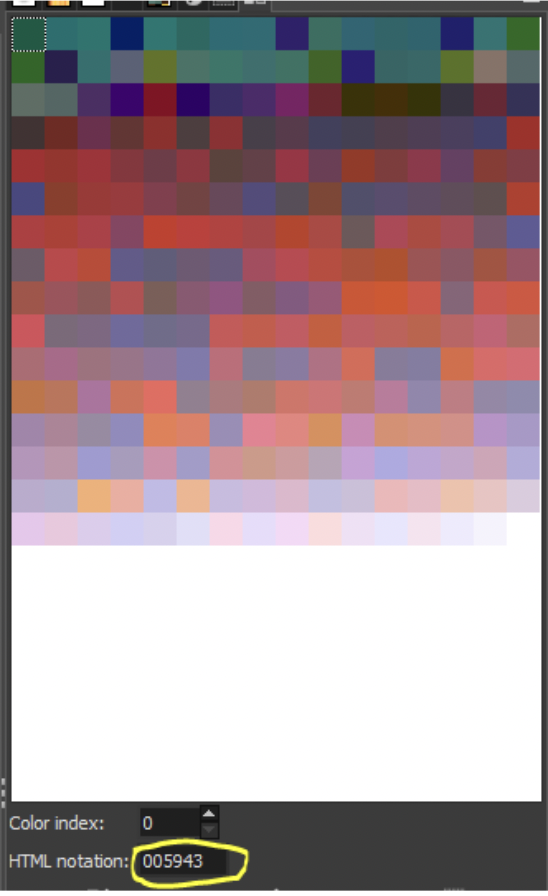
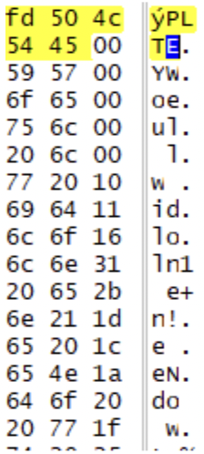
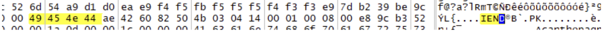
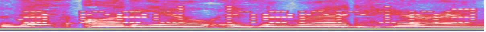

Solvers are presented with an odd-looking image of some Red Herrings. Opening the image in your favorite image editor (GIMP or Photoshop are easiest) will show that it is an indexed color image which is unusual in modern times (but was common in the early years when GIF images were common). This is hinted at in the first part of the comment of the image: “Ugh, fish juice has seeped in and colored the table!”
Each color is made up of a red, green and blue component, and since we are looking at red herrings, the red component can be ignored. The first few colors in the palette have the red component set to 0x00 to confirm this (and this is what gives the image its odd green tint).
Looking at the green and blue components reveals hex (or decimal) values within the range for letters. Each text has several 0x00 entries following the end of the string to indicate string termination.
There are two ways to extract the text:
Option 1: In the image editor, view each hex code and translate it (this is the slow way!)
Option 2: (The quick way) Open the image in a hex editor, search for the magic bytes “PLTE” and change the width of the viewing window so only 3 characters are displayed.
In either case, solvers will extract the following messages:
Green = You will need the password gnirreh and to understand “magic bytes”.
Blue = Well done! Now find the hidden file… but where does the image end?
Where could a file be hidden in an image? There are a number of places (and many of them would be very difficult to detect), but in this case, finding the file merely requires understanding a little about the file format of a PNG image. For solvers who do not understand the file layout, the phrase “magic bytes” should lead to: https://en.wikipedia.org/wiki/List_of_file_signatures
From there, the PNG page (https://en.wikipedia.org/wiki/Portable_Network_Graphics) describes the critical chunks of the file. As hinted by “but where does the image end?”, a PNG image ends with a section identified by the magic bytes “IEND”, which is then followed by a 4 byte checksum of the image content. Anything following that 4 byte checksum is ignored.
Looking at that section of the file shows a suspiciously large number of bytes following the checksum, and a little research (back on the file signatures wiki page) will show that “PK” is the signifier for a zip file.
Copy everything from 0x50 (P of the PK) to the end of the file into a new file and name it with a file extension of zip. Opening the zip file displays a number of data (binary/hex data) files, and audio (MP3) files. Solvers will need the password from earlier (gnirreh) to extract the files.
Listening to each audio file, solvers will hear the same voice in each “This audio is a red herring”, but each also has a different semi-regular static behind the voice. The comments in the audio files can be linked together to provide a hint for the next step:
| File name | Comment |
|---|---|
| red herring 1.mp3 | 73 Listen behind the words...70 |
| red herring 2.mp3 | 65... what else can you hear...63 |
| red herring 3.mp3 | 74... you need to see the sound ...72 |
| red herring 4.mp3 | 6F... the waveform won't help you...67 |
| red herring 5.mp3 | 72... you need to read these audio files ...61 |
| red herring 6.mp3 | 6D... put the characters in comments together. 2E |
Putting the bytes together spells out: spectrogram.
Opening each audio file in Audacity (or other sound editing tool), and viewing the spectrogram will display something useful:
The text from each file is:
| File name | Text |
|---|---|
| red herring 1.mp3 | a red herring |
| red herring 2.mp3 | nope not here |
| red herring 3.mp3 | not this one |
| red herring 4.mp3 | RAW RGBA 78x43 |
| red herring 5.mp3 | try again ... |
| red herring 6.mp3 | out of luck |
The data files have names that are all fish, and they can be grouped into three of the same type of fish; one of each has “red” in its name. (Sometimes a fish has multiple common names.)
| Fish name | Common name |
|---|---|
| Acanthopagrus schlegelii | blackhead seabream |
| Evynnis japonica | crimson seabream |
| Pagrus major | red seabream |
| Oreochromis aureus | blue tilapia |
| Sarotherodon melanotheron | blackchin tilapia |
| Tilapia rendalli | redbreast tilapia |
| Cymatogaster aggregata | shiner perch |
| Macquaria australasica | Macquarie perch |
| Perca fluviatilis | redfin perch |
| Oncorhynchus keta | chum salmon |
| Oncorhynchus nerka | red salmon (or sockeye salmon) |
| Salmo salar | Atlantic salmon |
| Lutjanus lutjanus | bigeye snapper |
| Lutjanus sebae | emperor red snapper |
| Ocyurus chrysurus | yellowtail snapper |
| Etrumeus teres | red-eye round herring |
| Lile nigrofasciata | blackstripe herring |
| Opisthonema berlangai | galapagos thread herring |
Examining the contents of these files will show that the files in each case are composed of a combination of 0xFF, 0xFE, and 0x00 bytes.
Combine the message from the audio (RAW RBGA 78x43) with a set of these files, pasting the three files for a fish together in alphabetical order by their scientific names. Open the subsequent merged file as a RAW image file (the .data extension is valid for RAW format) and select the setting for RGBA and a size of 78x43. This will produce a seemingly completely red rectangle for each set.
Using the magic wand selection tool with a threshold/tolerance of 0 will display a text in each image.

For each set of fish, these messages are:
| Fish | Message |
|---|---|
| Seabream | 404 Error Answer not found |
| Tilapia | Your answer is not here. A red herring. |
| Perch | Out of luck. Look elsewhere! |
| Salmon | Try again not in this one. |
| Snapper | Whoops! This isn’t right either. |
| Herring | The answer is an animal of order Tubulidentata. |
There is only a single animal in the order Tubulidentata, and that is the answer: AARDVARK.